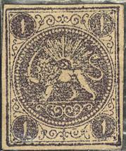
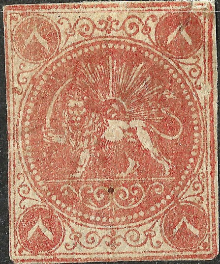
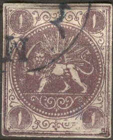
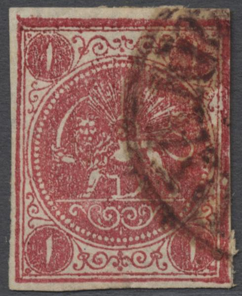
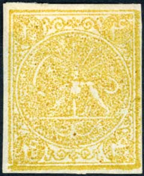
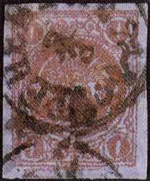
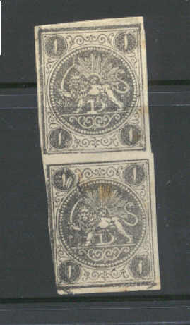
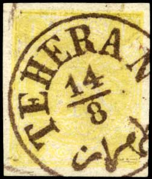

(Arabic numerals)
Return To Catalogue - Persia Barre Essays - Persia 1868 issue, types, part 1, 1 ch and 2 ch - Persia 1868 issue, types, part 2, 4 ch and 8 ch - Persia 1868 issue, types, part 3 - Persia 1868 issue, Boital reprints - 1868 issue forgeries part 1 - 1868 issue forgeries part 2 - 1868 issue, forgeries, part 3 - Persia 1876 issue - Persia (Iran) 1881-1894 - 1894-1902 - 1903-1910 - 1911 onwards- Miscellaneous
Note: on my website many of the
pictures can not be seen! They are of course present in the
catalogue;
contact me if you want to purchase the catalogue.
(Arabic numerals)
More information about stamps from Persia, forgeries etc. can be found on: http://www.persi.com/fakes/fakes/fake.html (link no longer working), http://fuchs-online.com/iran/lions-03.htm or http://www.iranphilatelic.org/scams.htm. Also the book of Friedrich Schuller 'Die Persische Post und de Postwerthzeichen von Persien und Buchara' has much information.
Without number between the legs of the lion, imperforated




Note the dent in the upper left part of the second stamp, which
corresponds to the same dent in one of the types of the Barre
essay.

'Cancelled' stamps
Stamps were printed in sheetlets of four stamps, then cut out and
put in envelopes of 100 pieces before being send to the post
office. On the envelopes a stamp was pasted with handwritten 'Yek
Sad Adad' ('100 pieces') on it as shown above (image from a David
Feldman auction).
1 c lilac 2 c green 4 c blue 8 c red
Many color shades exist for these four stamps (the so-called Bagheri issue). A 2 c green perforated might have been used postally (probably a Barre essay). Cancelling devices did not yet exist for the first four stamps issued in Persia. Cancelled stamps are therefore either forgeries, or cancels were applied for collectors afterwards (after 1875). The book of Friedrich Schuller shows a bar cancel which was tested by the postal ministry (Table III, image nr. 29). Actual cancels were only introduced by the Director of Post, Gustave von Riederer, in 1875. By that time the first 4 stamps had lost their validity.
Value of the stamps |
|||
vc = very common c = common * = not so common ** = uncommon |
*** = very uncommon R = rare RR = very rare RRR = extremely rare |
||
| Value | Unused | Used | Remarks |
| 1 c | RR | RR | |
| 2 c | RR | RR | A 2 c green with perforation 12 1/2 was prepared, but never issued. |
| 4 c | RR | RR | |
| 8 c | RR | RR | |
1875 With number (value) between the legs of the lion, imperforate or rouletted



1 K



4 K


5 K, it was printed in shades of violet first (around 4000 to
5000 stamps). When the authorities realized illegal prints were
made by the printer the color was changed to gold and when this
color was no longer available it was printed in grey, golden-red
and red-brown (around 2000 to 2500 were printed for all other
colors than violet, see
http://fuchs-online.com/iran/lions-11.htm).






1 K yellow essays. Only 500 stamps were printed (125 sheets of 4
stamps)
1 c black 2 c blue 2 c black (1877) 4 c red 8 c green 1 K red (1876) 1 K red on yellow (1878) 4 K yellow (1876) 4 K blue (1878) 5 K violet (1878, November) 5 K yellow, gold (1879, January) 5 K red (1878) 1 T brown on blue (1878)
Of the 1876 issue, stamps printed on both sides exist. They originated from the fact that if the printer was not satisfied with the results, he turned over the paper and printed on the back once more.
Value of the stamps |
|||
vc = very common c = common * = not so common ** = uncommon |
*** = very uncommon R = rare RR = very rare RRR = extremely rare |
||
| Value | Unused | Used | Remarks |
| 1 c | *** | *** | |
| 2 c blue | RR | RR | |
| 2 c black | RRR | RRR | |
| 4 c | R | R | |
| 8 c | RR | RR | |
| 1 K red | R | R | |
| 1 K red on yellow | RR | RR | |
| 1 K yellow | 1875, Essay, only 500 stamps printed, never put in use. | ||
| 4 K yellow | RR | R | |
| 4 K blue | RR | R | To replace the 4 K yellow stamps after the yellow ink was no longer available (badly printed). |
| 5 K violet | RR | RR | |
| 5 K yellow (gold) | RRR | RR | To replace the violet stamps after the ink ran out
and clandestine prints of the 5 K violet were discovered (badly printed). |
| 5 K red | RRR | RR | To replace the yellow stamps, after the yellow ink of
the 5 K yellow stamps ran out (badly printed). |
| 1 T | RRR | RRR | |
The tariff for an inland stamp was 5 chahi. Stamps abroad had to be franked with 10 chahi; furthermore a Russian stamp of 7 k should be added (since Persia was not a member of the UPU).
First stamps were printed in rows of four stamps, later also blocks of four stamps were printed.
For the different types, click here:
Persia 1868 issue, types, part 1, 1 ch and
2 ch
Persia 1868 issue, types, part 2, 4 ch and
8 ch
Persia 1868 issue, types, part 3

A mystery item, the 1 ch of the first issue, but with a '4'
between the legs.
Essays:

A Riester essay (from the engraver Martin Riester in Paris)? I've
seen these essays being used as seals for letters. I've seen a
slightly different type (rays different). The above image might
be a forgery of this essay, by the way.
So-called Riester essays exist (resting lion with sun in background in an ellipse with ornamental borders; an image can be found in Le Timbre Poste by Moens, No 262, page 86), as well as Barre essays (usually perforated, similar design as the issued stamps).
Another Riester essay with a resting lion. I've seen these essays
in the colors brown, blue, green, violet and red.

Barre essays.
Barre essays were named after the designer of the stamps in Paris: Albert Barre in 1865, who also designed some stamps of France. Five essays in four values in each four colours (green, red, blue and lilac) were made. All of them without numerals between the feet of the lion. They exist with perforation (12 1/2), normal stamps never have perforation. They exists with different values printed together (in the same color). These essays were very well printed, especially when compared with the stamps that were printed locally later, based on these essays. Out of the five original essays only four plates were send to Persia. Click here for more Persia Barre Essays.
Many forgeries of the 'lion' issue exist, possibly some of the
stamps listed above are forgeries also! The forgeries look more
'neat' than the genuine stamps in general.
There are many forgeries and reprints of these stamps:
Persia 1868 issue, Boital reprints
Persia 1868 issue, forgeries, part 1
Persia 1868 issue, forgeries, part 2
Persia 1868 issue, forgeries, part 3
The book 'Lions of Iran' by Mr. Mehrdad Sadri seems to be quite useful in determining forgeries of these stamps. This book also gives descriptions of essays etc. (I have not read this book myself).
Postal stationary of 1888 in a similar design with '1 Ch' in the
upper corners with black overprint. It also exists in the values
6 Ch and 12 Ch (with overprint, specimens without overprint were
prepared, but never put into use).


This might be a forgery, the '8' is straight and not slanting.
"TEHERAN" cancel, first cancel of Persia; image
obtained from a Gartner auction; From this site: this letter was
send by Austrian consular post on stampless envelope sent to the
"Comtesse de Thun, née de Salm, Sehuschitz, Böhmen"
(Austria) and carried through the Austrian diplomatic mail pouch
(thus without transit markings). This postmark was used at the
Austrian Consulate in Teheran and introduced by Gustav Riederer,
the famous founder of the modern Persian Postal Service (Summer
of 1875).

A stamp which was "Cancelled to Order"
For stamps of Persia issued from 1876 click here.


{kind=link}
{kind=link}
{kind=link}
{kind=link}
{kind=link}
{kind=link}